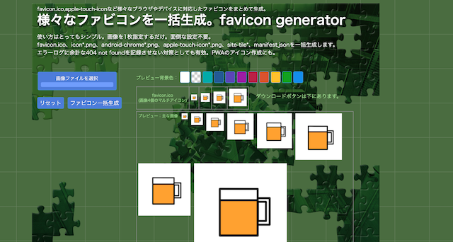

みんな！ファビコン作ろうぜ！
〜ファビコンとは〜
webブラウザーでサイトを開いた際にタブ部分に表示される画像のこと
1.画像を用意
タブに表示させる正方形の画像を用意します。できたら512*512pxのもの（後述サイトの推奨サイズが512*512pxのため）
2.作成サイトでアイコン化する。
ここで１からドット打ちをして作れますが、
ここに用意した画像を貼り付ければ作成できます。
画像ファイルを選択したのち、ファビコン一括生成を選択。下のダウンロードボタンからダウンロードします。

ファビコンをmygitフォルダに移動する。
なんかたくさんダウンロードされましたが、巻末が.icoのやつしか使いません。他は捨てよう！
その後、これをmygitのimagesフォルダに入れます。
html上で設置する。
＜head＞〜＜/head＞の中に＜link rel="icon" href="images/favicon.ico"＞を入力。
おしまい
良いファビコンライフを！！！！！！！！！！！